--
Días
Un homenaje a la ciencia ficción y al cuento de Ray Bradbury que le da nombre a esta edición del Festival de Literatura de Bogotá.
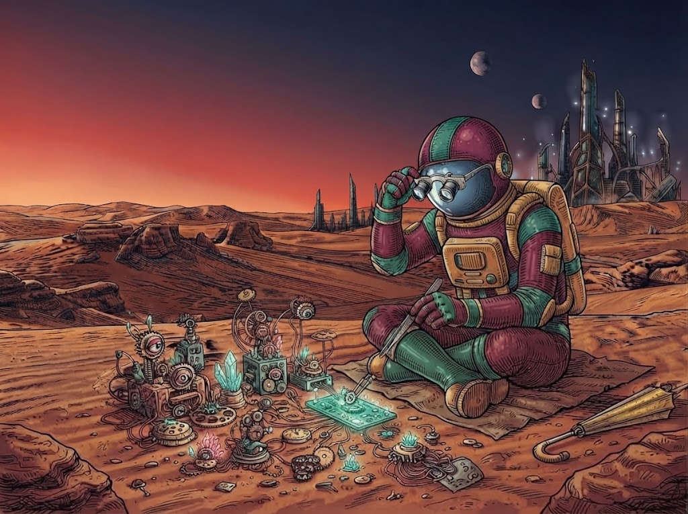
Para arrancar con toda la energía, ¿qué mejor que hacerlo destacando a dos de las autoras colombianas más importantes del género de la Ciencia Ficción?
Leer más →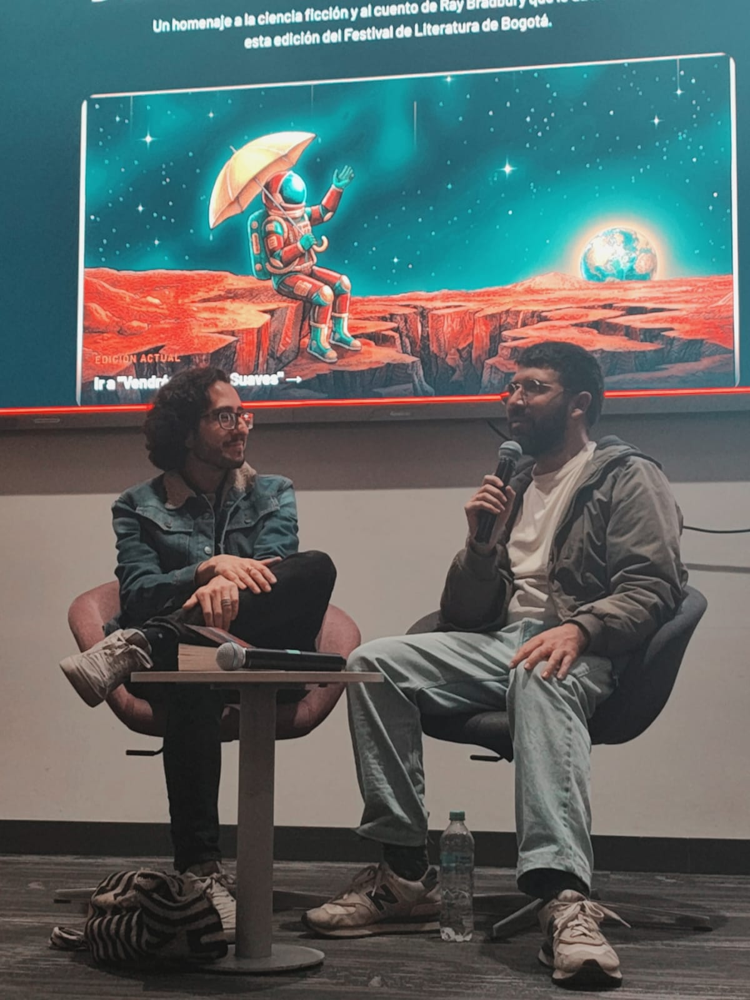
Lee el artículo completo en La Nueva Prensa
Leer más →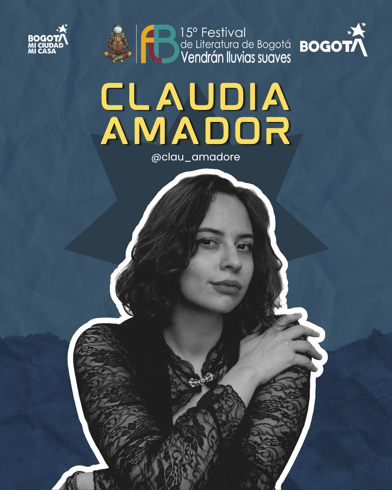
En la obra de Claudia Amador, el cuerpo no es solamente un lugar que habitamos. También es un territorio donde se cruzan el poder, la identidad, la tecnología y aquello que heredamos. Conócela aquí.
Leer más →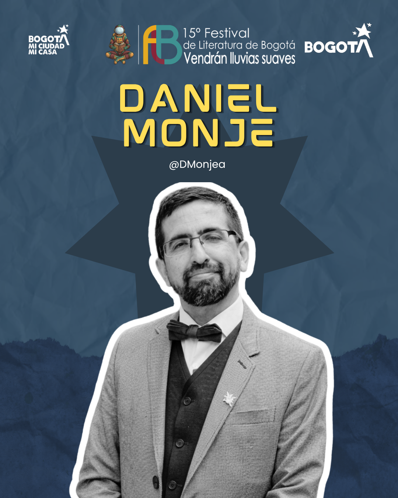
Daniel Monje es profesor, artista visual, performer y apasionado lector de ciencia ficción. Conócelo aquí.
Leer más →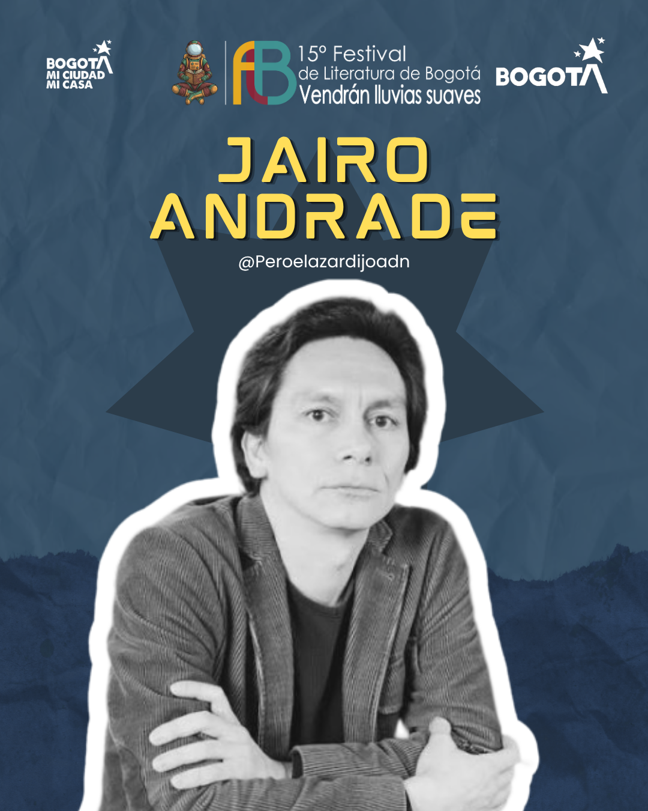
Jairo Andrade conecta escritura, arte y nuevos medios para llevar una pregunta al límite: ¿hasta dónde puede transformarse una historia sin dejar de ser literatura?
Leer más →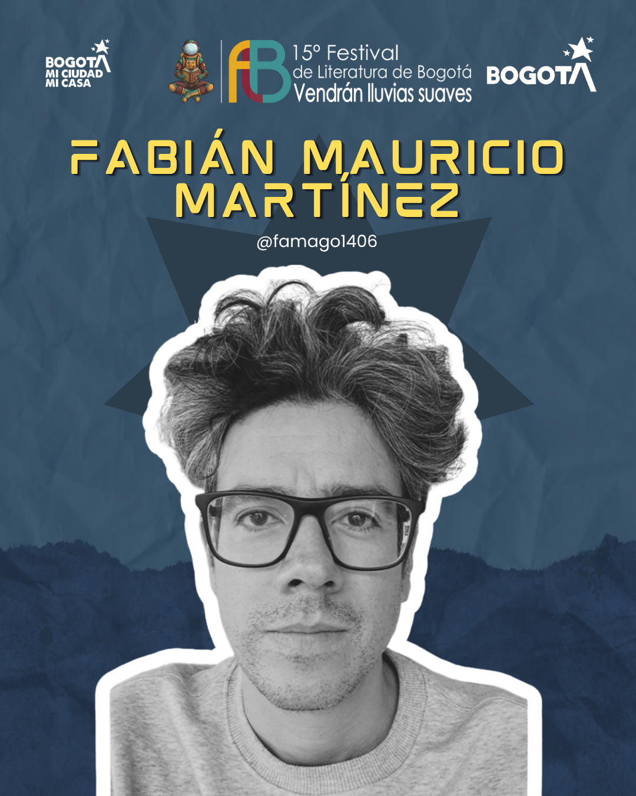
Hay escritores que inventan mundos… Fabián Mauricio Martínez prefiere encontrar las grietas del nuestro. Conócelo aquí
Leer más →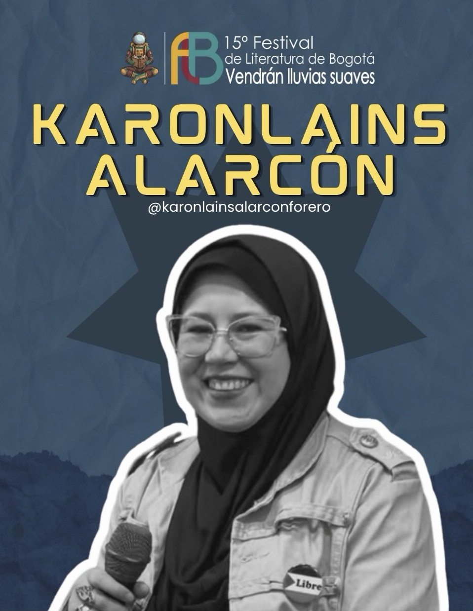
Karonlains es antropóloga, escritora, tallerista y su trayectoria de vida conecta literatura con cultura y procesos comunitarios en diversas regiones del país.
Leer más →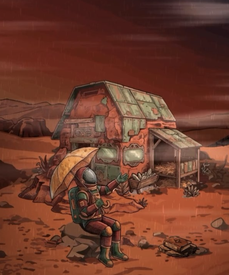
El futuro ya llegó y este año nos invita a mirarlo a través de la literatura. Les presentamos la XV edición del Festival de Literatura de Bogotá.
Leer más →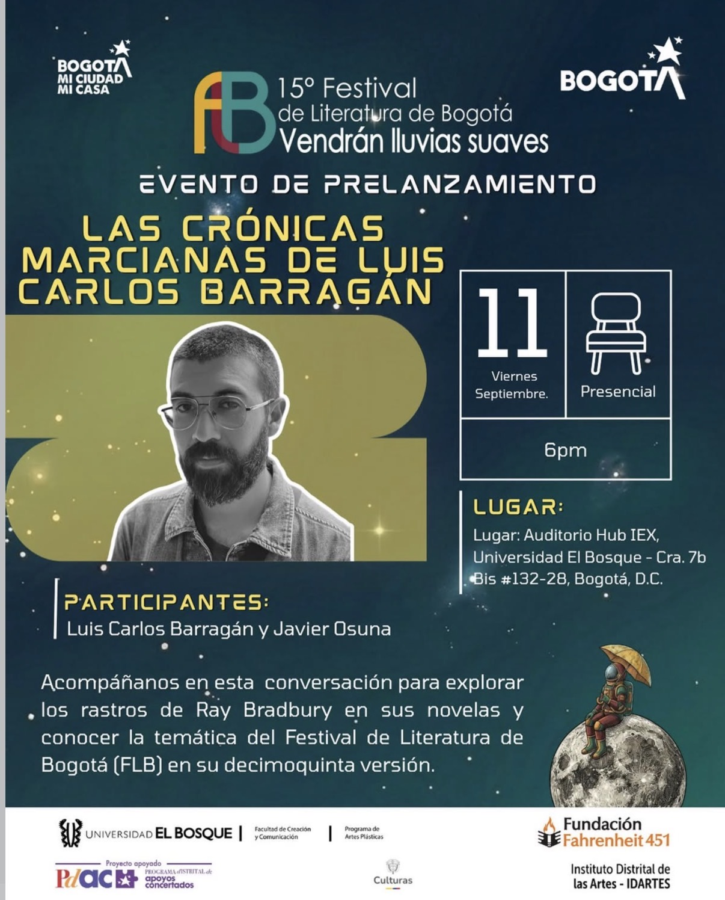
Acompáñanos a celebrar el inicio oficial de nuestro decimoquinto festival en este gran evento de prelanzamiento en la Universidad El Bosque.
Leer más →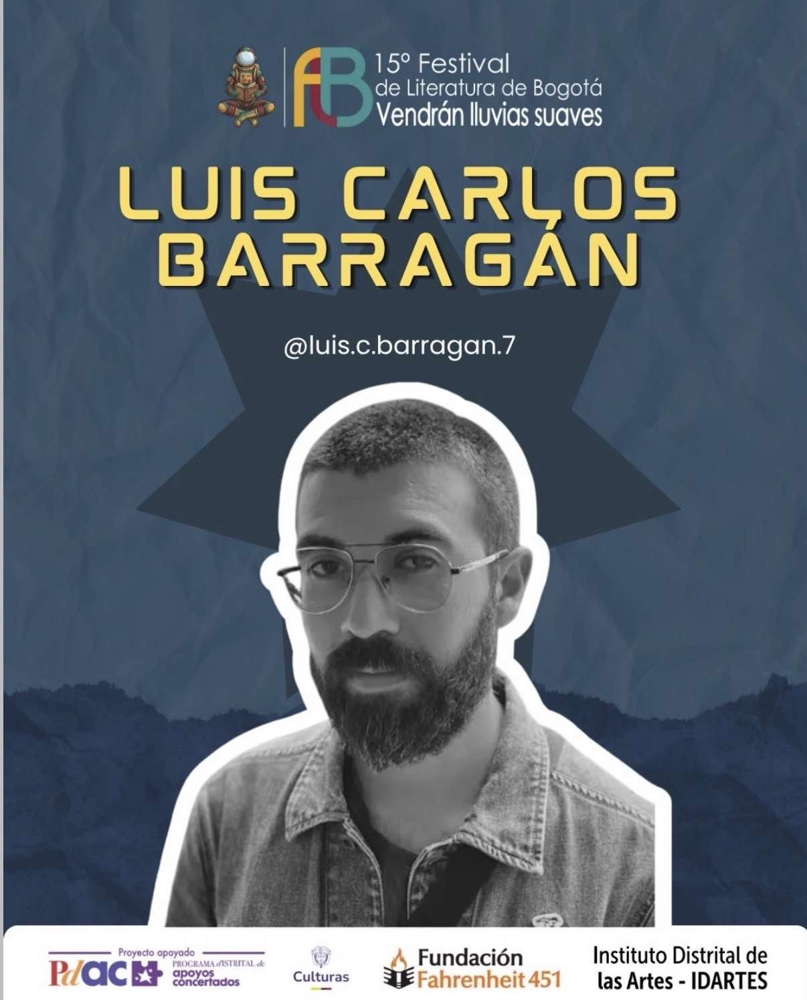
Arrancamos a presentar a los artistas que nos acompañarán en el Festival de Literatura de Bogotá, y qué mejor manera de abrir camino que con Luis Carlos Barragán.
Leer más →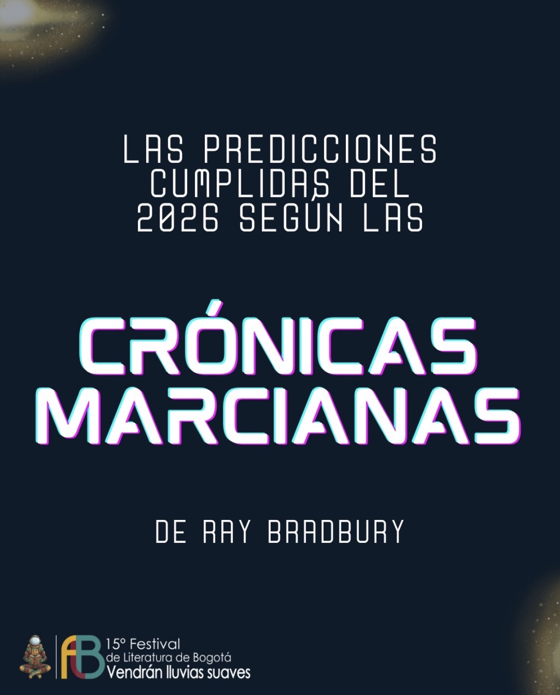
En este carrusel, te mostramos algunas predicciones que se cumplieron 76 años después.
Leer más →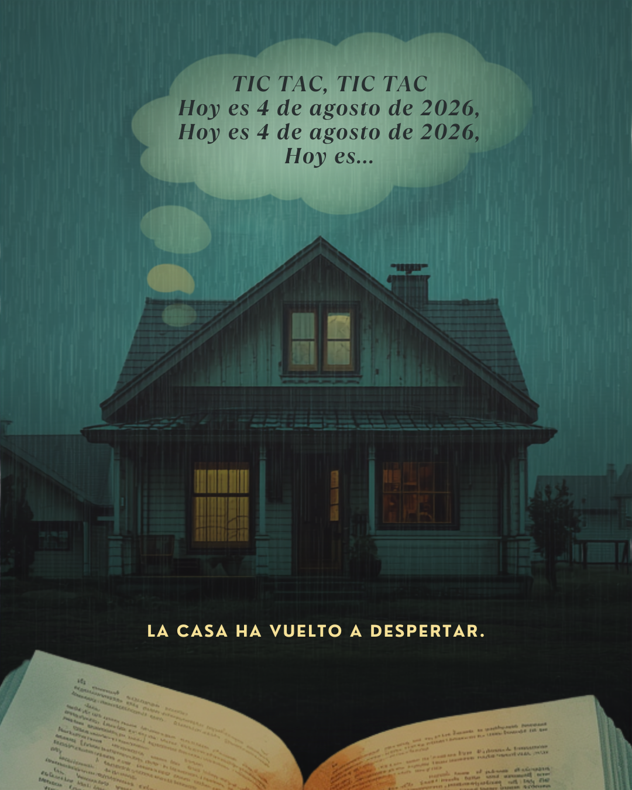
Durante décadas, esta fue solo una fecha escrita en un cuento de Ray Bradbury. Hoy, esa predicción deja de ser ficción o futuro para convertirse en nuestro presente.
Leer más →